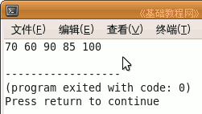
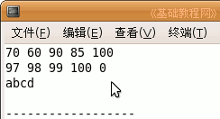

C 编程基础教程
作者：TeliuTe 来源：基础教程网
数组是指数据在内存中按顺序存放，通过数组名和序号，就可以很方便地查找和使用数据，下面我们来看一个练习；
1、启动 Geany
1）点菜单“应用程序－编程－Geany”启动 Geany ，新建一个 c 源程序；
2）点菜单“文件－另存为”命令，以“array”为文件名，保存文件到自己的文件夹；
2、输入程序代码
1）我们来定义一个存放学生成绩的数组，在主函数中输入；
|
int score[5] = {70,60,90,85,100}; int i = 0; for (i=0; i<5; i++) { printf ("%d%s",score[i]," "); } |
2）第一句是定义一个数组，用方括号表示数组大小，定义的时候可以赋值初始化，
用 for 语句来显示数组的内容，数组名 score ，局部变量 i 来表示各个数组元素，从 0 到 4；

3）我们再看一个字符串的，字符串最后有一个结束标记 \0，所以只能存放 4 个字符，
%c 是以字符方式输出；
|
printf ("\n"); char ch[5] = "abcd"; /*省略花括号*/ for (i=0; i<5; i++) { printf ("%c%s",ch[i]," "); } |
4）字符串在内存里是单个顺序存放的，存放字符的 ASCII 码，只是最后有一个 \0 标志作为字符串结束标记；
| a | b | c | d | \0 |
5）因此，显示字符串数组，可以直接用 printf (ch); 语句，程序显示的时候，从 ch 开始，到 \0 的自动结束；

|
#include <stdio.h> int main(int argc, char** argv) { int score[5] = {70,60,90,85,100}; int i = 0; for (i=0; i<5; i++) { printf ("%ds",score[i]," "); } printf ("\n"); char ch[5] = "abcd"; /*省略花括号*/ for (i=0; i<5; i++) { printf ("%c%s",ch[i]," "); } printf ("\n"); printf (ch); return 0; } |
本节学习了数组的基本操作，如果你成功地完成了练习，请继续学习下一课内容；
本教程由86团学校TeliuTe制作|著作权所有
基础教程网：http://teliute.org/
美丽的校园……
转载和引用本站内容，请保留作者和本站链接。